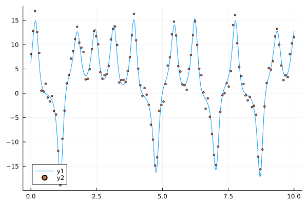
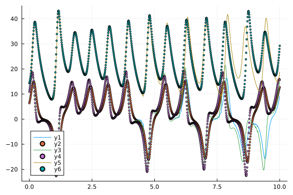
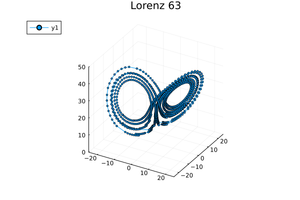

Model Forecasting
Set the State-Space model
using Plots
using AnalogDataAssimilation
using OrdinaryDiffEq
using SciMLBase: ODEProblem, solve
σ = 10.0
ρ = 28.0
β = 8.0 / 3
dt_integration = 0.01
dt_states = 1
dt_obs = 8
parameters = [σ, ρ, β]
var_obs = [1]
nb_loop_train = 100
nb_loop_test = 10
sigma2_catalog = 0.0
sigma2_obs = 2.0
ssm = StateSpaceModel(
lorenz63,
dt_integration,
dt_states,
dt_obs,
parameters,
var_obs,
nb_loop_train,
nb_loop_test,
sigma2_catalog,
sigma2_obs,
)StateSpaceModel(AnalogDataAssimilation.lorenz63, 0.01, 1, 8, [10.0, 28.0, 2.6666666666666665], [1], 100, 10, 0.0, 2.0)- compute u0 to be in the attractor space
u0 = [8.0; 0.0; 30.0]
tspan = (0.0, 5.0)
prob = ODEProblem(ssm.model, u0, tspan, parameters)
u0 = last(solve(prob, save_everystep = false).u)3-element Vector{Float64}:
6.373088873266281
10.935572999141295
14.3206870806645Generate data
xt, yo, catalog = generate_data(ssm, u0);
plot(xt.t, xt[1])
scatter!(yo.t, yo[1]; markersize = 2)
Data assimilation with model forecasting
np = 100
DA = DataAssimilation(ssm, xt)
@time x̂ = forecast(DA, yo, AnPF(np), progress = false);
println(RMSE(xt, x̂)) 1.273784 seconds (11.33 M allocations: 596.180 MiB, 6.33% gc time, 60.98% compilation time)
5.339645258515387Plot the times series
plot(xt.t, x̂[1])
scatter!(xt.t, xt[1]; markersize = 2)
plot!(xt.t, x̂[2])
scatter!(xt.t, xt[2]; markersize = 2)
plot!(xt.t, x̂[3])
scatter!(xt.t, xt[3]; markersize = 2)
Plot the phase-space plot
p = plot3d(
1,
xlim = (-25, 25),
ylim = (-25, 25),
zlim = (0, 50),
title = "Lorenz 63",
marker = 2,
)
for x in eachrow(vcat(x̂.u'...))
push!(p, x...)
end
p
This page was generated using Literate.jl.